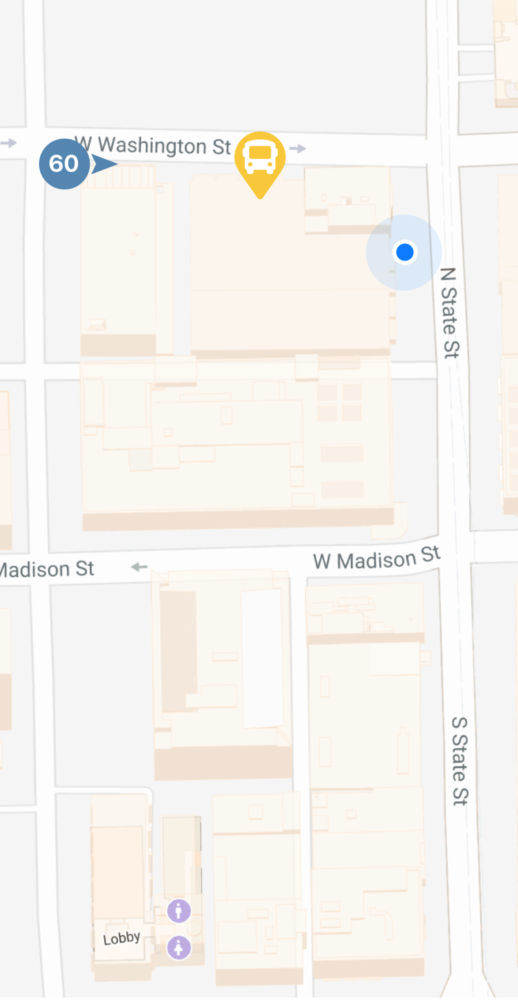

-
60
East
To Randolph/Harbor Drive
Now
every 20 min
-
124
East
To Navy Pier
2
min
every 10 min
-
J14
South
To 103rd/Stony Island
5
min
every 15 min
-
6x
Reroute
To Jackson Park Express
7
min
-
124
South
To Navy Pier
8
min
every 10 min
-
151
North
To Devon/Clark
12
min
every 16 min
-
Show inactive lines